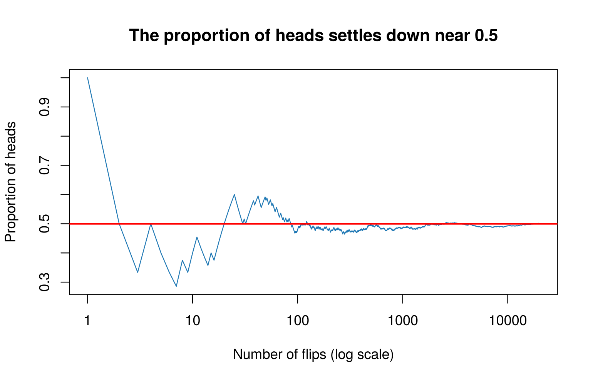
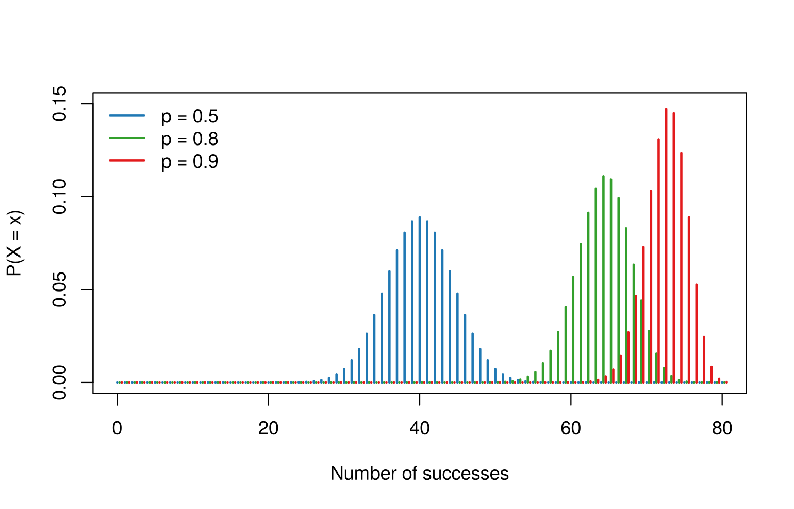
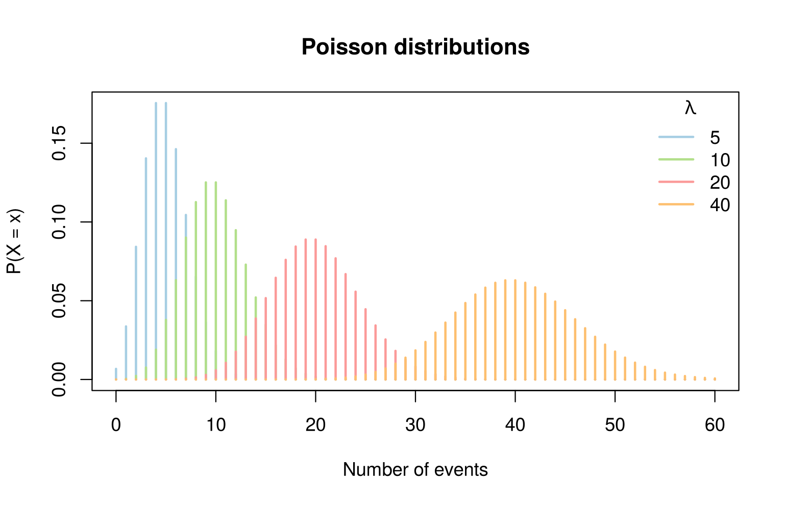
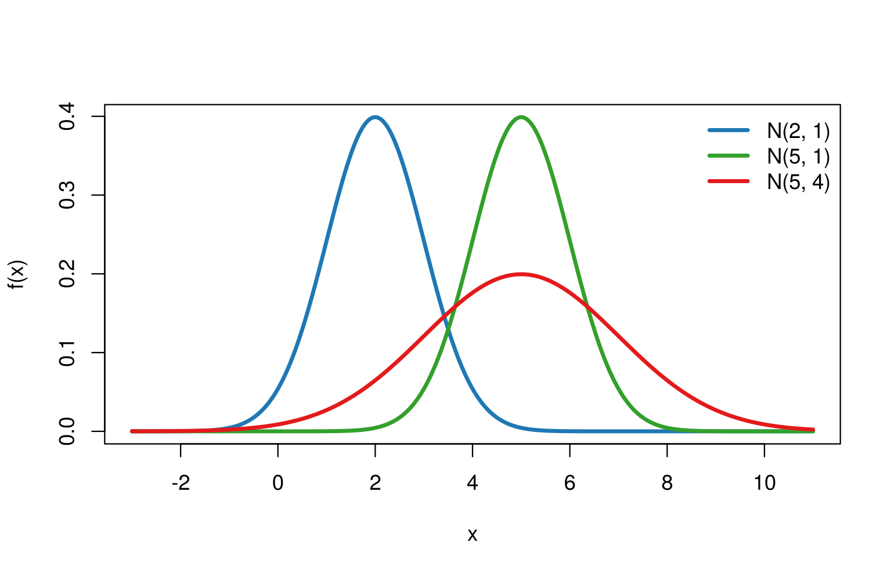
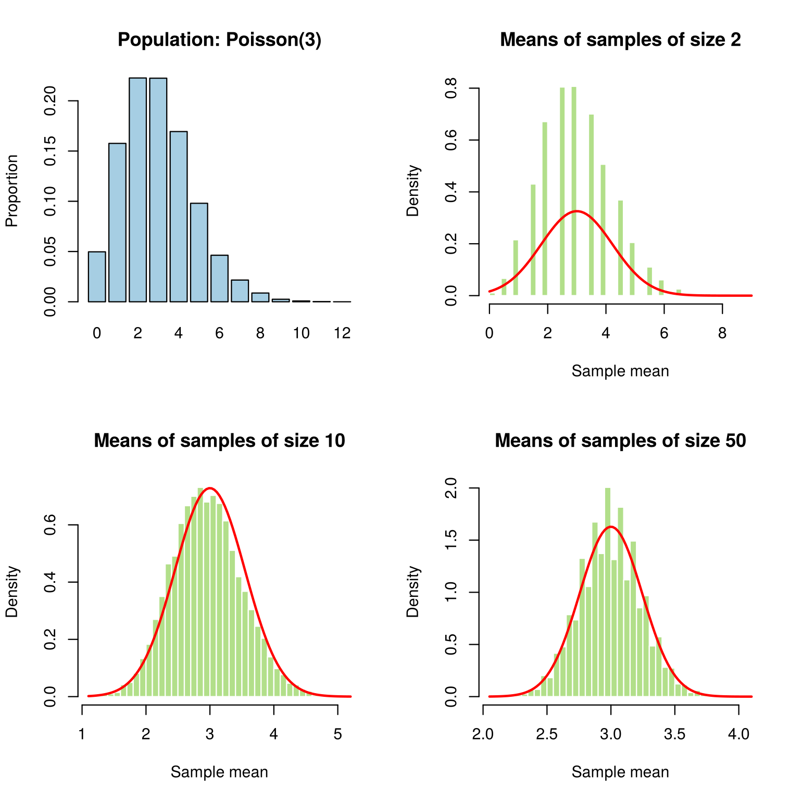

Session 5 of the course · Slides for this
session (PDF)
Learning goals. After this lesson you can
- explain why a relative frequency settles down as the number of
trials grows;
- use R’s
d, p, q and
r functions for the binomial, Poisson and normal
distributions;
- describe what the central limit theorem says, after seeing it happen
in a simulation.
An important part of learning R is to experiment and play: change the
numbers in the code and see what happens.
Random events: flipping a coin
What does it mean that the probability of heads is 0.5? We cannot see
it in one flip. But we can flip a (simulated) coin many times and watch
the proportion of heads.
sample() draws heads (1) or tails (0) at random, and
cumsum() lets us compute the proportion of heads after each
flip.
n <- 20000
coin_flips <- sample(c(0, 1), size = n, replace = TRUE)
running_proportion <- cumsum(coin_flips) / seq_len(n)
plot(running_proportion, type = "l", col = pal[2], log = "x",
xlab = "Number of flips (log scale)", ylab = "Proportion of heads",
main = "The proportion of heads settles down near 0.5")
abline(h = 0.5, col = "red", lwd = 2)

After a few flips the proportion jumps around a lot; after thousands
of flips it stays close to 0.5. This is the law of large
numbers: probability is the long-run relative frequency.
Discrete distributions
Binomial
The binomial distribution counts the number of successes in \(n\) independent trials, each with success
probability \(p\). Typical examples:
the number of patients out of 100 who experience a side effect of a
medication (with \(p = 0.05\)), the
number of fraudulent transactions among 50, or the number of returned
orders in a week. dbinom() gives the probability of each
possible count. Here are 80 trials with three different values of \(p\):
x <- 0:80
plot(x, dbinom(x, size = 80, prob = 0.5), type = "h", lwd = 2, col = pal[2],
xlab = "Number of successes", ylab = "P(X = x)", ylim = c(0, 0.15))
lines(x + 0.3, dbinom(x, size = 80, prob = 0.8), type = "h", lwd = 2, col = pal[4])
lines(x + 0.6, dbinom(x, size = 80, prob = 0.9), type = "h", lwd = 2, col = pal[6])
legend("topleft", legend = c("p = 0.5", "p = 0.8", "p = 0.9"),
col = pal[c(2, 4, 6)], lwd = 2, bty = "n")

Probabilities over all possible counts sum to one, and the variance
of simulated counts is close to the theoretical value \(np(1-p)\):
Exercise. If each of 100 patients has a 5% chance of a side
effect, what is the probability that more than 10 patients experience
it?
1 - pbinom(10, size = 100, prob = 0.05)
## [1] 0.01147241
## [1] 1
var(rbinom(100000, size = 80, prob = 0.5)) # simulation
## [1] 20.00903
## [1] 20
Poisson
The Poisson distribution describes counts of events in a fixed
interval (for example, the number of patients arriving at an emergency
department in an hour), with mean \(\lambda\).
x <- 0:60
lambdas <- c(5, 10, 20, 40)
plot(x, dpois(x, lambdas[1]), type = "h", lwd = 2, col = pal[1],
xlab = "Number of events", ylab = "P(X = x)",
main = "Poisson distributions")
for (k in 2:4) lines(x, dpois(x, lambdas[k]), type = "h", lwd = 2, col = pal[2 * k - 1])
legend("topright", legend = lambdas, title = expression(lambda),
col = pal[c(1, 3, 5, 7)], lwd = 2, bty = "n")

Exercise. With \(\lambda =
5\), what is the probability of observing at most three
events?
sum(dpois(0:3, lambda = 5))
## [1] 0.2650259
ppois(3, lambda = 5) # the same, using the cumulative distribution function
## [1] 0.2650259
The normal distribution
x <- seq(-3, 11, 0.01)
plot(x, dnorm(x, mean = 2, sd = 1), type = "l", lwd = 3, col = pal[2],
xlab = "x", ylab = "f(x)")
lines(x, dnorm(x, mean = 5, sd = 1), lwd = 3, col = pal[4])
lines(x, dnorm(x, mean = 5, sd = 2), lwd = 3, col = pal[6])
legend("topright", legend = c("N(2, 1)", "N(5, 1)", "N(5, 4)"),
col = pal[c(2, 4, 6)], lwd = 3, bty = "n")

How much probability lies within one, two and three standard
deviations of the mean?
## [1] 0.6826895
## [1] 0.9544997
## [1] 0.9973002
d, p, q and
r
Every distribution in R comes with four functions. For the normal
distribution:
dnorm(x) |
density at x |
height of the curve |
pnorm(q) |
\(P(X \le q)\) |
area to the left of q |
qnorm(p) |
the value with area p to its left |
inverse of pnorm |
rnorm(n) |
n random draws |
simulation |
## [1] 0.5
## [1] 1.959964
pnorm(qnorm(0.8)) # qnorm and pnorm undo each other
## [1] 0.8
## [1] -1
The central limit theorem, by experiment
Suppose a population follows a Poisson distribution with \(\lambda = 3\): it is discrete and skewed,
nothing like a normal curve. We draw many samples from it, compute each
sample’s mean, and look at the distribution of those means.
lambda <- 3
n_samples <- 10000
par(mfrow = c(2, 2))
barplot(table(factor(rpois(10000, lambda), levels = 0:12)) / 10000,
col = pal[1], main = "Population: Poisson(3)", ylab = "Proportion")
for (n in c(2, 10, 50)) {
means <- replicate(n_samples, mean(rpois(n, lambda)))
hist(means, breaks = 40, freq = FALSE, col = pal[3], border = "white",
main = paste("Means of samples of size", n), xlab = "Sample mean")
curve(dnorm(x, mean = lambda, sd = sqrt(lambda / n)), add = TRUE,
col = "red", lwd = 2)
}

As the sample size grows, the distribution of the sample mean becomes
more symmetric and closer to the red normal curve, and it becomes
narrower. This is the central limit theorem: for large
\(n\), the sample mean is approximately
normal with mean \(\mu\) and standard
deviation \(\sigma/\sqrt{n}\), whatever
the shape of the population.
Try it yourself
- In the coin example, make the coin unfair with
sample(c(0, 1), n, replace = TRUE, prob = c(0.7, 0.3)).
Where does the proportion settle?
- Repeat the central limit theorem experiment with a very skewed
population, for example
rexp(n, rate = 1). How large must
\(n\) be before the sample means look
normal?
- Use
qnorm() to find the value that cuts off the top
2.5% of a standard normal distribution. Where have you seen this number
before?
LS0tCnRpdGxlOiAiUHJvYmFiaWxpdHkgYW5kIHNpbXVsYXRpb24iCi0tLQoKYGBge3Igc2V0dXAsIGluY2x1ZGU9RkFMU0V9CmtuaXRyOjpvcHRzX2NodW5rJHNldChlY2hvID0gVFJVRSwgZmlnLndpZHRoID0gNywgZmlnLmhlaWdodCA9IDQuNSwgZHBpID0gMTEwKQpsaWJyYXJ5KFJDb2xvckJyZXdlcikKcGFsIDwtIGJyZXdlci5wYWwoOCwgIlBhaXJlZCIpCnNldC5zZWVkKDIwMjQpCmBgYAoKKlNlc3Npb24gNSBvZiB0aGUgW2NvdXJzZV0oaW5kZXguaHRtbCkgwrcgW1NsaWRlcyBmb3IgdGhpcyBzZXNzaW9uIChQREYpXShzbGlkZXMvMDUtcHJvYmFiaWxpdHktYW5kLWRpc3RyaWJ1dGlvbnMucGRmKSoKCioqTGVhcm5pbmcgZ29hbHMuKiogQWZ0ZXIgdGhpcyBsZXNzb24geW91IGNhbgoKLSBleHBsYWluIHdoeSBhIHJlbGF0aXZlIGZyZXF1ZW5jeSBzZXR0bGVzIGRvd24gYXMgdGhlIG51bWJlciBvZiB0cmlhbHMgZ3Jvd3M7Ci0gdXNlIFIncyBgZGAsIGBwYCwgYHFgIGFuZCBgcmAgZnVuY3Rpb25zIGZvciB0aGUgYmlub21pYWwsIFBvaXNzb24gYW5kIG5vcm1hbAogIGRpc3RyaWJ1dGlvbnM7Ci0gZGVzY3JpYmUgd2hhdCB0aGUgY2VudHJhbCBsaW1pdCB0aGVvcmVtIHNheXMsIGFmdGVyIHNlZWluZyBpdCBoYXBwZW4gaW4gYQogIHNpbXVsYXRpb24uCgpBbiBpbXBvcnRhbnQgcGFydCBvZiBsZWFybmluZyBSIGlzIHRvIGV4cGVyaW1lbnQgYW5kIHBsYXk6IGNoYW5nZSB0aGUgbnVtYmVycwppbiB0aGUgY29kZSBhbmQgc2VlIHdoYXQgaGFwcGVucy4KCiMjIFJhbmRvbSBldmVudHM6IGZsaXBwaW5nIGEgY29pbgoKV2hhdCBkb2VzIGl0IG1lYW4gdGhhdCB0aGUgcHJvYmFiaWxpdHkgb2YgaGVhZHMgaXMgMC41PyBXZSBjYW5ub3Qgc2VlIGl0IGluCm9uZSBmbGlwLiBCdXQgd2UgY2FuIGZsaXAgYSAoc2ltdWxhdGVkKSBjb2luIG1hbnkgdGltZXMgYW5kIHdhdGNoIHRoZQpwcm9wb3J0aW9uIG9mIGhlYWRzLgoKYHNhbXBsZSgpYCBkcmF3cyBoZWFkcyAoMSkgb3IgdGFpbHMgKDApIGF0IHJhbmRvbSwgYW5kIGBjdW1zdW0oKWAgbGV0cyB1cwpjb21wdXRlIHRoZSBwcm9wb3J0aW9uIG9mIGhlYWRzIGFmdGVyIGVhY2ggZmxpcC4KCmBgYHtyIGNvaW59Cm4gPC0gMjAwMDAKY29pbl9mbGlwcyA8LSBzYW1wbGUoYygwLCAxKSwgc2l6ZSA9IG4sIHJlcGxhY2UgPSBUUlVFKQpydW5uaW5nX3Byb3BvcnRpb24gPC0gY3Vtc3VtKGNvaW5fZmxpcHMpIC8gc2VxX2xlbihuKQoKcGxvdChydW5uaW5nX3Byb3BvcnRpb24sIHR5cGUgPSAibCIsIGNvbCA9IHBhbFsyXSwgbG9nID0gIngiLAogICAgIHhsYWIgPSAiTnVtYmVyIG9mIGZsaXBzIChsb2cgc2NhbGUpIiwgeWxhYiA9ICJQcm9wb3J0aW9uIG9mIGhlYWRzIiwKICAgICBtYWluID0gIlRoZSBwcm9wb3J0aW9uIG9mIGhlYWRzIHNldHRsZXMgZG93biBuZWFyIDAuNSIpCmFibGluZShoID0gMC41LCBjb2wgPSAicmVkIiwgbHdkID0gMikKYGBgCgpBZnRlciBhIGZldyBmbGlwcyB0aGUgcHJvcG9ydGlvbiBqdW1wcyBhcm91bmQgYSBsb3Q7IGFmdGVyIHRob3VzYW5kcyBvZiBmbGlwcwppdCBzdGF5cyBjbG9zZSB0byAwLjUuIFRoaXMgaXMgdGhlICoqbGF3IG9mIGxhcmdlIG51bWJlcnMqKjogcHJvYmFiaWxpdHkgaXMgdGhlCmxvbmctcnVuIHJlbGF0aXZlIGZyZXF1ZW5jeS4KCiMjIERpc2NyZXRlIGRpc3RyaWJ1dGlvbnMKCiMjIyBCaW5vbWlhbAoKVGhlIGJpbm9taWFsIGRpc3RyaWJ1dGlvbiBjb3VudHMgdGhlIG51bWJlciBvZiBzdWNjZXNzZXMgaW4gJG4kIGluZGVwZW5kZW50CnRyaWFscywgZWFjaCB3aXRoIHN1Y2Nlc3MgcHJvYmFiaWxpdHkgJHAkLiBUeXBpY2FsIGV4YW1wbGVzOiB0aGUgbnVtYmVyIG9mIHBhdGllbnRzCm91dCBvZiAxMDAgd2hvIGV4cGVyaWVuY2UgYSBzaWRlIGVmZmVjdCBvZiBhIG1lZGljYXRpb24gKHdpdGggJHAgPSAwLjA1JCksIHRoZQpudW1iZXIgb2YgZnJhdWR1bGVudCB0cmFuc2FjdGlvbnMgYW1vbmcgNTAsIG9yIHRoZSBudW1iZXIgb2YgcmV0dXJuZWQgb3JkZXJzCmluIGEgd2Vlay4gYGRiaW5vbSgpYCBnaXZlcyB0aGUgcHJvYmFiaWxpdHkgb2YKZWFjaCBwb3NzaWJsZSBjb3VudC4gSGVyZSBhcmUgODAgdHJpYWxzIHdpdGggdGhyZWUgZGlmZmVyZW50IHZhbHVlcyBvZiAkcCQ6CgpgYGB7ciBiaW5vbWlhbH0KeCA8LSAwOjgwCnBsb3QoeCwgZGJpbm9tKHgsIHNpemUgPSA4MCwgcHJvYiA9IDAuNSksIHR5cGUgPSAiaCIsIGx3ZCA9IDIsIGNvbCA9IHBhbFsyXSwKICAgICB4bGFiID0gIk51bWJlciBvZiBzdWNjZXNzZXMiLCB5bGFiID0gIlAoWCA9IHgpIiwgeWxpbSA9IGMoMCwgMC4xNSkpCmxpbmVzKHggKyAwLjMsIGRiaW5vbSh4LCBzaXplID0gODAsIHByb2IgPSAwLjgpLCB0eXBlID0gImgiLCBsd2QgPSAyLCBjb2wgPSBwYWxbNF0pCmxpbmVzKHggKyAwLjYsIGRiaW5vbSh4LCBzaXplID0gODAsIHByb2IgPSAwLjkpLCB0eXBlID0gImgiLCBsd2QgPSAyLCBjb2wgPSBwYWxbNl0pCmxlZ2VuZCgidG9wbGVmdCIsIGxlZ2VuZCA9IGMoInAgPSAwLjUiLCAicCA9IDAuOCIsICJwID0gMC45IiksCiAgICAgICBjb2wgPSBwYWxbYygyLCA0LCA2KV0sIGx3ZCA9IDIsIGJ0eSA9ICJuIikKYGBgCgpQcm9iYWJpbGl0aWVzIG92ZXIgYWxsIHBvc3NpYmxlIGNvdW50cyBzdW0gdG8gb25lLCBhbmQgdGhlIHZhcmlhbmNlIG9mCnNpbXVsYXRlZCBjb3VudHMgaXMgY2xvc2UgdG8gdGhlIHRoZW9yZXRpY2FsIHZhbHVlICRucCgxLXApJDoKCipFeGVyY2lzZS4qIElmIGVhY2ggb2YgMTAwIHBhdGllbnRzIGhhcyBhIDUlIGNoYW5jZSBvZiBhIHNpZGUgZWZmZWN0LCB3aGF0IGlzCnRoZSBwcm9iYWJpbGl0eSB0aGF0IG1vcmUgdGhhbiAxMCBwYXRpZW50cyBleHBlcmllbmNlIGl0PwoKYGBge3IgYmlub21pYWwtZXhlcmNpc2V9CjEgLSBwYmlub20oMTAsIHNpemUgPSAxMDAsIHByb2IgPSAwLjA1KQpgYGAKCmBgYHtyIGJpbm9taWFsLWNoZWNrfQpzdW0oZGJpbm9tKHgsIDgwLCAwLjUpKQp2YXIocmJpbm9tKDEwMDAwMCwgc2l6ZSA9IDgwLCBwcm9iID0gMC41KSkgICAjIHNpbXVsYXRpb24KODAgKiAwLjUgKiAwLjUgICAgICAgICAgICAgICAgICAgICAgICAgICAgICAgIyB0aGVvcnkKYGBgCgojIyMgUG9pc3NvbgoKVGhlIFBvaXNzb24gZGlzdHJpYnV0aW9uIGRlc2NyaWJlcyBjb3VudHMgb2YgZXZlbnRzIGluIGEgZml4ZWQgaW50ZXJ2YWwgKGZvcgpleGFtcGxlLCB0aGUgbnVtYmVyIG9mIHBhdGllbnRzIGFycml2aW5nIGF0IGFuIGVtZXJnZW5jeSBkZXBhcnRtZW50IGluIGFuCmhvdXIpLCB3aXRoIG1lYW4gJFxsYW1iZGEkLgoKYGBge3IgcG9pc3Nvbn0KeCA8LSAwOjYwCmxhbWJkYXMgPC0gYyg1LCAxMCwgMjAsIDQwKQpwbG90KHgsIGRwb2lzKHgsIGxhbWJkYXNbMV0pLCB0eXBlID0gImgiLCBsd2QgPSAyLCBjb2wgPSBwYWxbMV0sCiAgICAgeGxhYiA9ICJOdW1iZXIgb2YgZXZlbnRzIiwgeWxhYiA9ICJQKFggPSB4KSIsCiAgICAgbWFpbiA9ICJQb2lzc29uIGRpc3RyaWJ1dGlvbnMiKQpmb3IgKGsgaW4gMjo0KSBsaW5lcyh4LCBkcG9pcyh4LCBsYW1iZGFzW2tdKSwgdHlwZSA9ICJoIiwgbHdkID0gMiwgY29sID0gcGFsWzIgKiBrIC0gMV0pCmxlZ2VuZCgidG9wcmlnaHQiLCBsZWdlbmQgPSBsYW1iZGFzLCB0aXRsZSA9IGV4cHJlc3Npb24obGFtYmRhKSwKICAgICAgIGNvbCA9IHBhbFtjKDEsIDMsIDUsIDcpXSwgbHdkID0gMiwgYnR5ID0gIm4iKQpgYGAKCipFeGVyY2lzZS4qIFdpdGggJFxsYW1iZGEgPSA1JCwgd2hhdCBpcyB0aGUgcHJvYmFiaWxpdHkgb2Ygb2JzZXJ2aW5nIGF0IG1vc3QKdGhyZWUgZXZlbnRzPwoKYGBge3IgcG9pc3Nvbi1leGVyY2lzZX0Kc3VtKGRwb2lzKDA6MywgbGFtYmRhID0gNSkpCnBwb2lzKDMsIGxhbWJkYSA9IDUpICAgIyB0aGUgc2FtZSwgdXNpbmcgdGhlIGN1bXVsYXRpdmUgZGlzdHJpYnV0aW9uIGZ1bmN0aW9uCmBgYAoKIyMgVGhlIG5vcm1hbCBkaXN0cmlidXRpb24KCmBgYHtyIG5vcm1hbH0KeCA8LSBzZXEoLTMsIDExLCAwLjAxKQpwbG90KHgsIGRub3JtKHgsIG1lYW4gPSAyLCBzZCA9IDEpLCB0eXBlID0gImwiLCBsd2QgPSAzLCBjb2wgPSBwYWxbMl0sCiAgICAgeGxhYiA9ICJ4IiwgeWxhYiA9ICJmKHgpIikKbGluZXMoeCwgZG5vcm0oeCwgbWVhbiA9IDUsIHNkID0gMSksIGx3ZCA9IDMsIGNvbCA9IHBhbFs0XSkKbGluZXMoeCwgZG5vcm0oeCwgbWVhbiA9IDUsIHNkID0gMiksIGx3ZCA9IDMsIGNvbCA9IHBhbFs2XSkKbGVnZW5kKCJ0b3ByaWdodCIsIGxlZ2VuZCA9IGMoIk4oMiwgMSkiLCAiTig1LCAxKSIsICJOKDUsIDQpIiksCiAgICAgICBjb2wgPSBwYWxbYygyLCA0LCA2KV0sIGx3ZCA9IDMsIGJ0eSA9ICJuIikKYGBgCgpIb3cgbXVjaCBwcm9iYWJpbGl0eSBsaWVzIHdpdGhpbiBvbmUsIHR3byBhbmQgdGhyZWUgc3RhbmRhcmQgZGV2aWF0aW9ucyBvZiB0aGUKbWVhbj8KCmBgYHtyIHNpZ21hLXJ1bGV9CnBub3JtKDEpIC0gcG5vcm0oLTEpCnBub3JtKDIpIC0gcG5vcm0oLTIpCnBub3JtKDMpIC0gcG5vcm0oLTMpCmBgYAoKIyMjIGBkYCwgYHBgLCBgcWAgYW5kIGByYAoKRXZlcnkgZGlzdHJpYnV0aW9uIGluIFIgY29tZXMgd2l0aCBmb3VyIGZ1bmN0aW9ucy4gRm9yIHRoZSBub3JtYWwKZGlzdHJpYnV0aW9uOgoKfCBGdW5jdGlvbiB8IFJldHVybnMgfCBFeGFtcGxlIHwKfC0tLXwtLS18LS0tfAp8IGBkbm9ybSh4KWAgfCBkZW5zaXR5IGF0IGB4YCB8IGhlaWdodCBvZiB0aGUgY3VydmUgfAp8IGBwbm9ybShxKWAgfCAkUChYIFxsZSBxKSQgfCBhcmVhIHRvIHRoZSBsZWZ0IG9mIGBxYCB8CnwgYHFub3JtKHApYCB8IHRoZSB2YWx1ZSB3aXRoIGFyZWEgYHBgIHRvIGl0cyBsZWZ0IHwgaW52ZXJzZSBvZiBgcG5vcm1gIHwKfCBgcm5vcm0obilgIHwgYG5gIHJhbmRvbSBkcmF3cyB8IHNpbXVsYXRpb24gfAoKYGBge3IgZHBxcn0KcG5vcm0oMCkKcW5vcm0oMC45NzUpCnBub3JtKHFub3JtKDAuOCkpICAgIyBxbm9ybSBhbmQgcG5vcm0gdW5kbyBlYWNoIG90aGVyCnFub3JtKHBub3JtKC0xKSkKYGBgCgojIyBUaGUgY2VudHJhbCBsaW1pdCB0aGVvcmVtLCBieSBleHBlcmltZW50CgpTdXBwb3NlIGEgcG9wdWxhdGlvbiBmb2xsb3dzIGEgUG9pc3NvbiBkaXN0cmlidXRpb24gd2l0aCAkXGxhbWJkYSA9IDMkOiBpdCBpcwpkaXNjcmV0ZSBhbmQgc2tld2VkLCBub3RoaW5nIGxpa2UgYSBub3JtYWwgY3VydmUuIFdlIGRyYXcgbWFueSBzYW1wbGVzIGZyb20gaXQsCmNvbXB1dGUgZWFjaCBzYW1wbGUncyBtZWFuLCBhbmQgbG9vayBhdCB0aGUgZGlzdHJpYnV0aW9uIG9mIHRob3NlIG1lYW5zLgoKYGBge3IgY2x0LCBmaWcuaGVpZ2h0ID0gN30KbGFtYmRhIDwtIDMKbl9zYW1wbGVzIDwtIDEwMDAwCnBhcihtZnJvdyA9IGMoMiwgMikpCmJhcnBsb3QodGFibGUoZmFjdG9yKHJwb2lzKDEwMDAwLCBsYW1iZGEpLCBsZXZlbHMgPSAwOjEyKSkgLyAxMDAwMCwKICAgICAgICBjb2wgPSBwYWxbMV0sIG1haW4gPSAiUG9wdWxhdGlvbjogUG9pc3NvbigzKSIsIHlsYWIgPSAiUHJvcG9ydGlvbiIpCmZvciAobiBpbiBjKDIsIDEwLCA1MCkpIHsKICBtZWFucyA8LSByZXBsaWNhdGUobl9zYW1wbGVzLCBtZWFuKHJwb2lzKG4sIGxhbWJkYSkpKQogIGhpc3QobWVhbnMsIGJyZWFrcyA9IDQwLCBmcmVxID0gRkFMU0UsIGNvbCA9IHBhbFszXSwgYm9yZGVyID0gIndoaXRlIiwKICAgICAgIG1haW4gPSBwYXN0ZSgiTWVhbnMgb2Ygc2FtcGxlcyBvZiBzaXplIiwgbiksIHhsYWIgPSAiU2FtcGxlIG1lYW4iKQogIGN1cnZlKGRub3JtKHgsIG1lYW4gPSBsYW1iZGEsIHNkID0gc3FydChsYW1iZGEgLyBuKSksIGFkZCA9IFRSVUUsCiAgICAgICAgY29sID0gInJlZCIsIGx3ZCA9IDIpCn0KcGFyKG1mcm93ID0gYygxLCAxKSkKYGBgCgpBcyB0aGUgc2FtcGxlIHNpemUgZ3Jvd3MsIHRoZSBkaXN0cmlidXRpb24gb2YgdGhlIHNhbXBsZSBtZWFuIGJlY29tZXMgbW9yZQpzeW1tZXRyaWMgYW5kIGNsb3NlciB0byB0aGUgcmVkIG5vcm1hbCBjdXJ2ZSwgYW5kIGl0IGJlY29tZXMgbmFycm93ZXIuIFRoaXMgaXMKdGhlICoqY2VudHJhbCBsaW1pdCB0aGVvcmVtKio6IGZvciBsYXJnZSAkbiQsIHRoZSBzYW1wbGUgbWVhbiBpcyBhcHByb3hpbWF0ZWx5Cm5vcm1hbCB3aXRoIG1lYW4gJFxtdSQgYW5kIHN0YW5kYXJkIGRldmlhdGlvbiAkXHNpZ21hL1xzcXJ0e259JCwgd2hhdGV2ZXIgdGhlCnNoYXBlIG9mIHRoZSBwb3B1bGF0aW9uLgoKIyMgVHJ5IGl0IHlvdXJzZWxmCgoxLiBJbiB0aGUgY29pbiBleGFtcGxlLCBtYWtlIHRoZSBjb2luIHVuZmFpciB3aXRoCiAgIGBzYW1wbGUoYygwLCAxKSwgbiwgcmVwbGFjZSA9IFRSVUUsIHByb2IgPSBjKDAuNywgMC4zKSlgLiBXaGVyZSBkb2VzIHRoZQogICBwcm9wb3J0aW9uIHNldHRsZT8KMi4gUmVwZWF0IHRoZSBjZW50cmFsIGxpbWl0IHRoZW9yZW0gZXhwZXJpbWVudCB3aXRoIGEgdmVyeSBza2V3ZWQgcG9wdWxhdGlvbiwKICAgZm9yIGV4YW1wbGUgYHJleHAobiwgcmF0ZSA9IDEpYC4gSG93IGxhcmdlIG11c3QgJG4kIGJlIGJlZm9yZSB0aGUgc2FtcGxlCiAgIG1lYW5zIGxvb2sgbm9ybWFsPwozLiBVc2UgYHFub3JtKClgIHRvIGZpbmQgdGhlIHZhbHVlIHRoYXQgY3V0cyBvZmYgdGhlIHRvcCAyLjUlIG9mIGEgc3RhbmRhcmQKICAgbm9ybWFsIGRpc3RyaWJ1dGlvbi4gV2hlcmUgaGF2ZSB5b3Ugc2VlbiB0aGlzIG51bWJlciBiZWZvcmU/Cg==
Jiayun Jin · Text and figures licensed under CC BY 4.0; code under the MIT License.